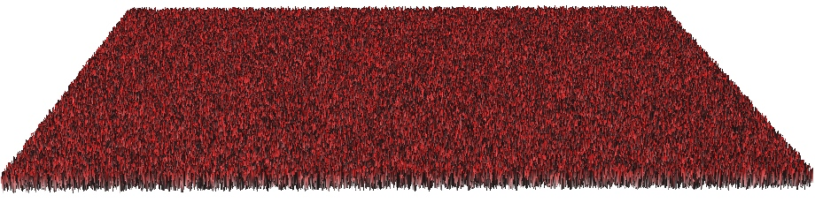
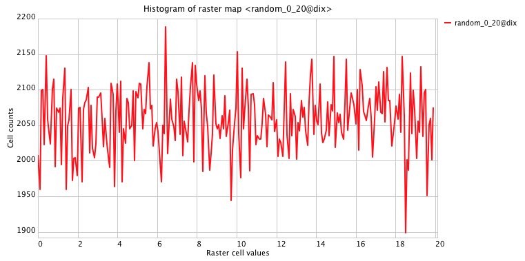

Types of geometry driven water models
- Surface water flow - flow accumulation
- Flooding

Both are based on digital elevation models
Helena Mitasova, Anna Petrasova, Vaclav Petras
GIS714 Geosimulations NCSU
Both are based on digital elevation models
See GIS582 and supplemental material for methods to compute surface gradient, and its components slope and aspect (or partial derivatives) add slide for equations between slope, aspect and partial derivates
flowlines - path of a single drop
flow accumulation - density of flowlines, number of drops passing through each grid cell

See GIS582 and supplemental material for flow tracing and flow accumulation methods
D8, Dinf, SFD, MFD http://ncsu-geoforall-lab.github.io/geospatial-modeling-course/lectures/flow.html#/10
Spatial variable source areas
flow accumulation - density of flowlines, number of drops passing through each grid cell
See GIS582 and supplemental material for flow tracing and flow accumulation methods
Spatial variable source areas
flow accumulation - density of flowlines, number of drops passing through each grid cell
See GIS582 and supplemental material for flow tracing and flow accumulation methods
Simulation of spatialy variable source areas explanation, equation?
flow accumulation - density of flowlines, number of drops passing through each grid cell
Simulation of spatialy variable source areas examples
flow accumulation - density of flowlines, number of drops passing through each grid cell
See GIS582 and supplemental material for flow tracing and flow accumulation methods


where $\mu$ is the mean, $\sigma$ is the standard deviation, $\sigma^2$ is the variance, $e$ is exponential function, and $f(z | \mu,\sigma^2)$ is probability density function of the normal distribution
Monte Carlo methods often require generating values that have normal distribution
See also Normal distribution here